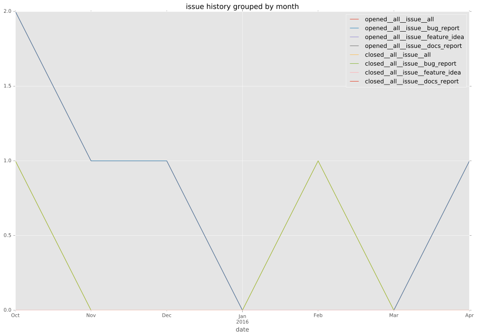
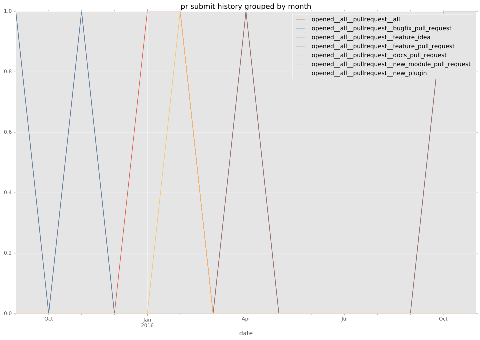
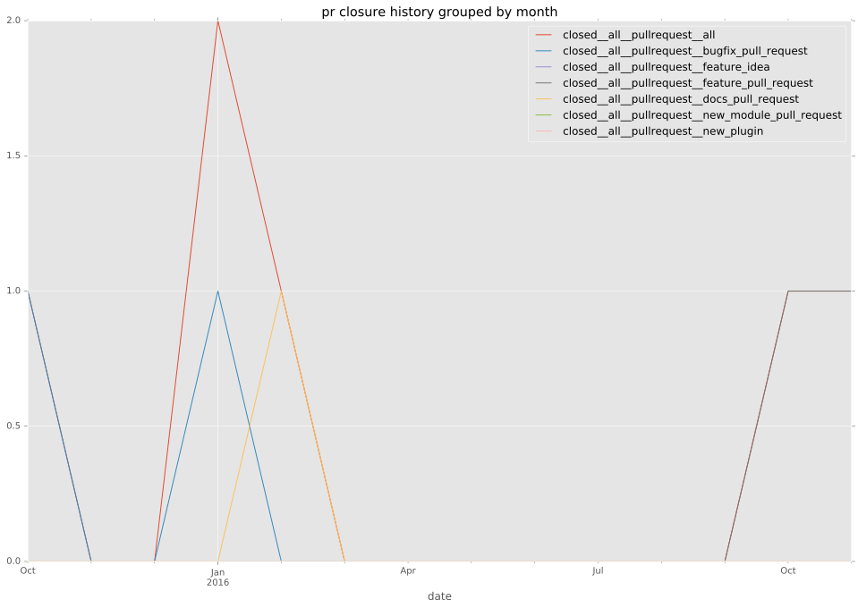
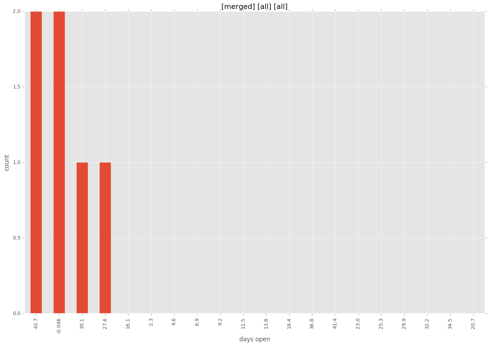
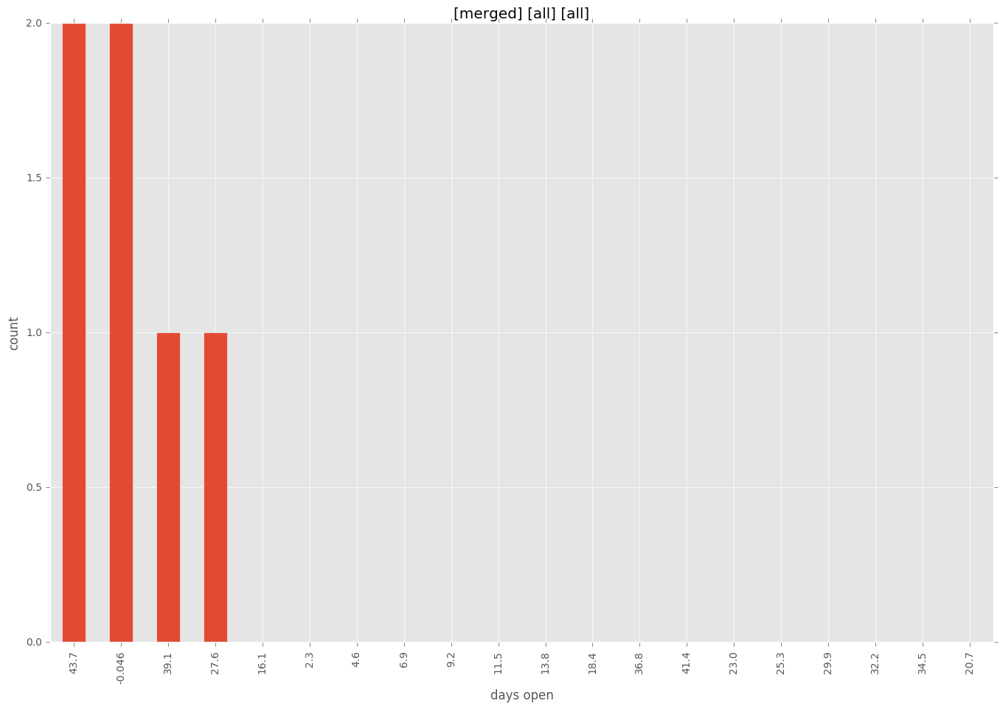

total issue counts
pullrequest: 6
docs pull request: 2
bugfix pull request: 3
issue: 6
new plugin: 1
bug report: 6
issue history

pullrequest history


days open by issue type
all
count: 17
std: 81.9233860169
min: 0
max: 265
median: 40.0
mean: 52.2352941176
pullrequest
count: 0
std: nan
min: nan
max: nan
median: nan
mean: nan
docs pull request
count: 4
std: 25.9807621135
min: 0
max: 45
median: 22.5
mean: 22.5
bugfix pull request
count: 6
std: 20.7332261519
min: 0
max: 46
median: 28.0
mean: 24.6666666667
issue
count: 0
std: nan
min: nan
max: nan
median: nan
mean: nan
new plugin
count: 2
std: 0.0
min: 40
max: 40
median: 40.0
mean: 40.0
bug report
count: 5
std: 137.602688927
min: 0
max: 265
median: 43.0
mean: 114.0
closures grouped by total days open
 
